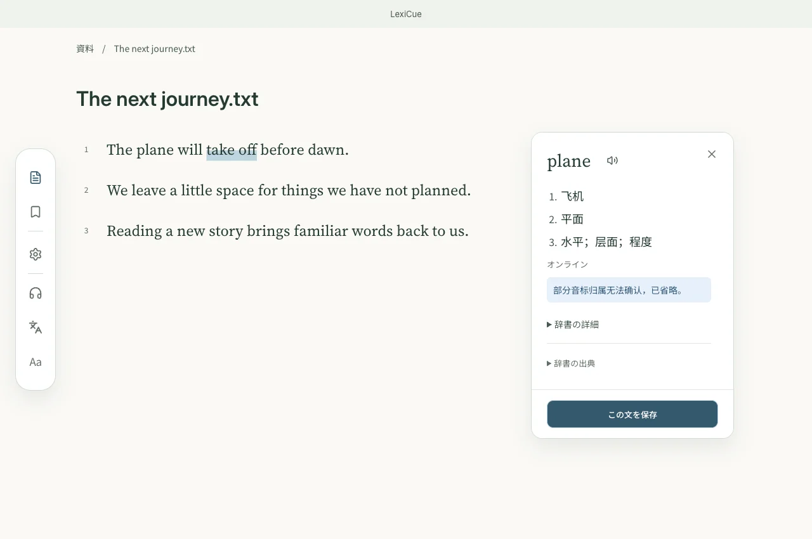
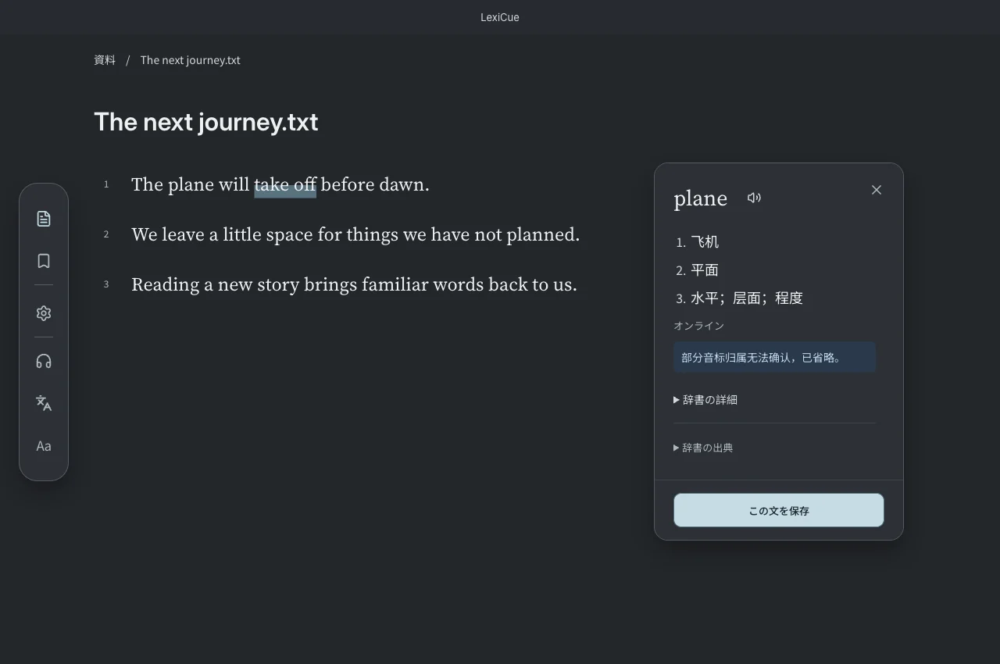

読む・辞書で調べる
読書の位置を保ちながら英語を理解します。
このページの目次
単語と文章
- 単語を選んで辞書を引くか、文章の一部を選んで文脈から理解します。利用可能な辞書を切り替え、必要なら自分の説明を書きます。
- デスクトップでは原文の横、小さい画面では下からパネルが開きます。閉じて読み続けられます。



関連する操作辞書の語義
中国語訳と聴読
翻訳ボタンで中国語訳を切り替えます。既存の訳は残し、不足分はオンラインで取得できます。失敗しても英文を読み続け、後で再試行できます。
聴読モードで読み進められます。元の音声があれば再生し、読み上げと速度調整も利用できます。通信・音声の有無・環境により制限があります。
理解を保存する
表現、元の文、利用可能な辞書の参照を保存し、この文に対する自分の説明やメモを添えます。現在は文脈の保存と再会が中心で、旧学習記録は履歴に残ります。